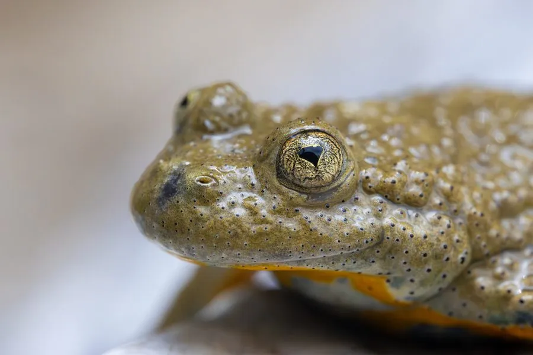

两栖动物 · 动物界
黄腹铃蟾 Bombina variegata

欧洲山地的小型蟾类，背部灰褐带疣、腹部鲜黄缀黑斑，遇险时翻背亮出黄肚皮示警，皮肤分泌物刺激，喜在车辙积水里繁殖。
- 分类
- 门脊索动物门纲两栖纲目无尾目科铃蟾科属铃蟾属
- 栖息环境
- 落叶林、草地、采石场与林间小路的浅积水、车辙与石槽
- 地理分布
- 欧洲中部与南部，从法国东部、意大利北部至巴尔干半岛与乌克兰
- 保护级别
- IUCN 无危（LC）；欧洲多国列为受保护物种
物种志
黄腹铃蟾体长仅 3.5–5.5 厘米，雌性略大。背部灰褐、黄褐或橄榄色，布满疣粒，疣顶常带黑色角质刺；腹部鲜黄至橙黄，缀有深色斑块，四肢内侧与喉部也有黄色斑。瞳孔呈三角形或心形，鼓膜不明显。皮肤腺体分泌物含铃蟾肽类物质，接触黏膜会引起灼痛与红肿，因此不宜用手直接接触后揉眼。
它们分布于欧洲中部的低山与丘陵，栖息于落叶林、草地、采石场与林间小路的积水处，尤其偏爱雨水积成的车辙、浅坑与石槽。繁殖期在 4–7 月，雄蟾在水面发出“呜—呜”的钟鸣声，雌蟾产下成串的卵，蝌蚪约两个月完成变态。遇险时它会把身体弓成桥状、翻起四肢露出鲜黄的腹部，这是一种“警戒色”展示，提醒捕食者自己有毒。农业集约化与湿地消失是其数量下降的主要原因。
形态与习性
- 体长约 3.5–5.5 cm，雌性略大
- 食性小型昆虫、蚯蚓、蜘蛛与水生无脊椎动物
- 繁殖4–7 月产卵，卵成串附着于水草，蝌蚪约两月变态
- 警戒色遇险时弓身翻肢，露出鲜黄带黑斑的腹部
- 皮肤毒性分泌物含铃蟾肽，接触黏膜会引起灼痛红肿
- 栖息特点偏爱雨水积成的车辙、浅坑等小型临时水体
- 寿命野外约 5–8 年，饲养下可达 12 年
趣味知识
- 黄腹铃蟾遇险时会把自己弓成桥状，翻出鲜黄的肚皮警告对方。
- 它的皮肤分泌物会刺激黏膜，摸过之后要避免揉眼睛。
- 它偏爱车辙里的小水坑，雨季一到就集中到这些临时水洼繁殖。